Demo logins Retailer 9999900101; Retailer at its credit limit 9999900107; Order desk 9999900001; Salesman 9999900202. The OTP is always 123456 (mock). See deployment.md.
1. Business problem and overview
Company A distributes four packaged food and home-care brands to about 1,800 kirana shops. Orders arrive today as notebook entries, WhatsApp texts, photos and voice notes, and six office staff retype them into Tally the next morning. Salesmen can't see stock or schemes at the counter, so lines are cut later. The brief estimates the yearly cost at ₹52.5 lakh, made up of wrong items (₹31.5 lakh), order-entry staff (₹15.6 lakh) and stock-outs found after ordering (₹5.4 lakh).
I built the core slice end to end, and then every remaining MUST HAVE item:
A retailer catalogue showing their own prices, GST, stock and schemes.
A cart priced live by the scheme engine, with order placement and credit holds.
AI capture of informal Hindi, Hinglish and English text orders. Every line is reviewed by a person.
An order desk that approves, rejects, releases holds and edits lines, then exports approved orders as a Tally CSV.
Also: AI capture from a photo of a handwritten list or a Hindi voice note; a salesman mode that works offline; van loading lists; and a dashboard of retailers with no order in 14 days.
The hard part is the scheme engine: free goods per complete multiple, slab discounts and the best-offer choice. It interacts with stock, credit and GST. It lives in pure, unit-tested functions shared by the cart preview, order placement and desk edits.
Scope
Status
Retailer: OTP login (mock), catalogue, prices per tier, GST label, stock badge, scheme badges, search and categories
Complete, verified live
Cart with live scheme preview, free-goods nudge, credit indicator, place order, my orders, repeat order, cancel or request cancellation
Complete, verified live
AI capture from text: review screen, confidence, two alternatives, unit and pack questions, correction, confirm to cart, manual fallback
Complete, verified live (§11)
Order desk: queue and filters, detail, approve, reject, release hold, cancel approved, line edit with repricing, retailer acknowledgement, audit trail
Desk corrections saved as retailer aliases and used by later captures
Complete (desk "Save as alias")
Hindi and English (retailer screens), 360 px layout, installable PWA manifest
Complete
AI capture from a photo of a handwritten list or a Hindi voice note (transcribed, then the same checks and review)
Complete, verified live (§11)
Salesman mode during visits, working offline: assigned shops only, on-device pricing, outbox that syncs on reconnect
Complete, verified live with the network switched off
Order desk van loading lists (per van: cases per item incl. free goods, drop list per shop)
Complete, verified live
Dashboard of retailers with no order in 14 days (desk: all; salesman: his shops)
Complete, verified live
AI capture from inside the salesman app; desk-side capture on a retailer's behalf
Deferred
2. Architecture and technology choices
Choice
Why
Next.js 16 (App Router), TypeScript strict, React Server Components, server actions
One deployable for retailer, desk and API. The server renders pages so phones download little JS (140–150 KB measured). Server actions give typed RPC with no REST layer to secure twice.
Partial prerendering (cacheComponents)
A static shell (header, layout) is sent instantly on slow 3G, and private data streams behind <Suspense> after the session check. The shell holds nothing private (D73).
PostgreSQL on Neon (Singapore) + Prisma 7
Relational integrity, row locks and conditional updates for stock, credit and exports. Singapore cut the measured query round trip from 326 ms (US) to 81 ms. Prisma gives typed queries; critical locks use raw SQL FOR UPDATE.
Vercel, region sin1
Functions run next to the database. Verified by the x-vercel-id: bom1::sin1::… header (Mumbai edge, Singapore function).
Pure domain layer (src/domain)
Money, pricing, schemes, GST, stock options, credit, the order status machine, capture post-processing and the Tally CSV are plain functions with no I/O. A lint rule forbids Prisma or Next imports there. The same functions price the cart, the order and desk edits.
zod on every input; Vitest + Playwright
Strict input validation (unknown keys rejected), unit tests without a database, integration tests on a guarded Neon test branch, and E2E at 360 px.
Gemini via @google/genai (pinned 2.32.0)
One structured-output call per message. Everything after it is deterministic code, and a person confirms every line.
Tailwind with our own tokens; inline SVG pack illustrations
A restrained palette and large type. Images cost about 1–2 KB each with no image requests.
Architecture diagram
3. Database schema and important entities
There are 17 models, all money in integer paise and all rates in basis points. Hand-written migrations add CHECK constraints, for example 0 ≤ reservedCases ≤ stockCases, and a retailer user must have a retailerId.
Entity
Key fields and purpose
PriceTier, Retailer, User, Session
Tier discount in bps. Retailer credit limit and outstanding (mocked ledger). User phone, role (RETAILER/DESK) and locale. Session stores only the SHA-256 of the token, with an expiry.
Brand, Category, Sku, Scheme
Dealer price, price unit (piece or case), pieces per case, GST bps, stockCases and reservedCases. Scheme is FREE_GOODS (buy X get Y) or SLAB_DISCOUNT (min cases, bps), with a validity window.
Order, OrderLine
Unique clientRequestId (idempotency), status, optimistic version, frozen totals, credit snapshot, awaitingRetailerAck, captureId and exportBatchId. Lines freeze the price, applied scheme, free cases, discount, GST and the other eligible offer.
OrderEvent
Append-only audit: PLACED, STATUS_CHANGED, LINE_EDITED/REMOVED, ACK_REQUESTED/ACCEPTED, CANCEL_REQUESTED, NOTE, EXPORTED. Records actor (null means system), from/to status, reason and a JSON before/after payload.
Capture, CaptureLine, Alias
Original message, raw model JSON, status and fail reason, latency. Per line: original words, the model's pick, the server's suggestion, score, confidence, flags, alternatives, and the person's resolution. Alias is (retailer, normalised phrase) → SKU.
Van; Retailer.salesmanId and vanId; Order.takenAt; Capture.inputType
Van = a delivery route; every shop has one van and one assigned salesman (D109, D110). takenAt is when the salesman took the order on his phone, possibly offline. inputType is TEXT, PHOTO or VOICE (D111).
ExportBatch, RateLimitHit
Batch number, order count, total and the stored CSV, so a re-download is byte-identical. Rate limits use fixed windows with atomic upsert counters.
Seed data:
the brief's 3 SKUs exactly as given, plus 35 fictional SKUs across 4 brands;
20 fictional retailers with tiers, credit and outstanding balances, and 90 historical orders priced by the domain engine;
a desk user;
3 vans and 3 salesmen, each covering one route.
Note: the historical median order is ₹11,566, against the ₹5,000 the brief assumes, because the brief's case prices run from ₹777 to ₹5,460. I did not manipulate the totals.
4. Authentication and authorization
Login: mock OTP. The phone number plus code 123456 works only when AUTH_DEMO_OTP is exactly true; otherwise every login is refused. Requests are rate-limited per phone and per IP, and the response is the same whether or not the phone exists.
Sessions: a random 32-byte token in an HTTP-only, Secure, SameSite=Lax __Host- cookie. Only its SHA-256 is stored. Role and retailer are re-read from the database on every request, so a demotion or logout applies immediately. Logout is POST-only and revokes only the current session.
Every server action goes through one wrapper: action({ role, input, handler }). It resolves the viewer from the session, checks the role, and validates input with a strict zod schema, so retailerId or role in the input is rejected. A registry test fails the build if any action bypasses the wrapper.
Salesman (D109): every salesman call re-checks in the database that the shop is assigned to him. The shared helper that resolves a retailer from the request refuses salesmen outright, so this check can't be bypassed by accident. Another salesman's shop is NOT_FOUND.
Ownership: retailer reads are always scoped by retailerId from the session (ownedBy(viewer)). Another retailer's order or capture is NOT_FOUND, never "forbidden". Desk-only reads refuse non-desk viewers. The CSV route returns 404 to retailers, which is verified live.
No private data in shared caches: signed-in pages are sent with Cache-Control: private, no-store (verified live), and the prerendered shell holds no private data.
5. Catalogue, pricing and retailer workflow
Case price = dealer price × pieces per case (when the price is per piece), less the tier discount, rounded half-up once per case. Example: biscuit ₹8.10 × 96 = ₹777.60.
GST transparency: catalogue prices are shown "+ GST" (exclusive), alongside the per-piece price and the MRP (which includes GST). The cart and order show GST per rate and a "Total payable (incl. GST)".
Stock badge: "In stock", "Only N cases left" (≤ 20) or "Out of stock". The full inventory is never shown.
Scheme badges show every active offer. Search understands shop words ("chai patti", "peti"). Repeat order copies an old order into the cart, which then re-prices it at today's terms.
6. Cart and order placement
The cart lives on the device (localStorage, one per user), so taps cost no network writes on 3G. The server prices it with the same engine, debounced, and returns an HMAC-signed quote of exactly what will be charged.
Placement runs in one transaction:
Idempotency by clientRequestId: a retried submit returns the same order.
Lock the retailer row.
Re-price everything on the server.
Compare against the quote. Any change returns a fresh preview with nothing written.
Credit check: an over-limit order needs an explicit, still-current confirmation and lands on CREDIT_HOLD.
Reserve paid + free cases atomically.
Create the order with frozen lines and audit events.
While a submission is pending, the cart is locked with the same request ID, so a flaky network can't create duplicates or change the payload.
7. Schemes, free goods, GST and credit
Rule
Implementation (pure functions, unit-tested)
Free goods
Buy 10 get 1 per complete multiple: 9 → 0, 10 → 1, 21 → 2. Free cases never count toward the threshold, carry no taxable value and no GST, and their reference value is kept.
Slab discount
3% off the whole line at ≥ 5 cases. Detergent 5 cases: ₹10,150.00 − ₹304.50.
Best offer
Offers never stack. The higher-value offer applies, a tie goes to the discount, and the other eligible offer is named on the line.
Stock and free goods
Reservation includes free cases. If free goods don't fit, the retailer chooses: the most paid cases that keep the free goods, or the requested quantity with the best offer that has no free goods. Nothing switches silently.
GST
Per line on (taxable − discount), rounded half-up. Order total = sum of rounded line totals. Demo rates: biscuits and tea 5%, detergent 18%.
Nudge
"Add 3 more cases, get 1 free", shown only if stock covers the next multiple.
Credit
Available = limit − outstanding − open orders (pending, held, review, approved-not-exported). This stops a large order being split to slip under the limit. Exactly at the limit is fine; one paisa over is a hold. Rechecked at desk approval without counting the order twice.
8. Stock reservation and concurrency
Reserve:UPDATE "Sku" SET "reservedCases" = "reservedCases" + n WHERE id = $1 AND "stockCases" - "reservedCases" >= n. Zero rows means stock short, and the transaction rolls back. Updates run in sorted SKU order, so concurrent orders can't deadlock.
Status effects (from the status machine): approve deducts (stock −n, reserved −n); reject or cancel before approval releases; cancel after approval restores. Each happens exactly once under the order lock and an optimistic version. Two simultaneous approvals give one success and one CONFLICT, which is tested.
Lock order everywhere is retailer → order → SKUs, shared by placement, retailer cancellation and desk changes.
Database CHECK constraints guarantee stock and reservations never go negative, even if code were wrong.
9. AI order capture architecture
Retailer pastes a message on the "पर्ची / Order slip" tab (up to 1,000 characters). The client attaches a UUID; a retry after a lost response returns the same capture.
Rate limits are atomic database counters: 5 per minute and 40 per day per user, plus 300 per day across the app to protect the quota.
Context is built from the catalogue (short IDs S1…Sn, names, pack and case sizes), this retailer's past-ordered SKUs, this retailer's desk-verified aliases and the Hinglish glossary. No prices, stock, credit or personal data are sent.
One Gemini call with responseMimeType: application/json and a JSON schema, temperature 0 and low thinking. Our 8-second abort is the only limit, with no SDK retries. The message sits inside delimiters, and the system prompt says it is data, never instructions.
Strict validation of the output with zod. Invalid JSON, wrong types or empty output count as a failure. Injected fields such as price, stock or discount are dropped and never reach the result.
Deterministic post-processing (src/domain/capture/postprocess.ts), described in §10.
The capture is stored: original text, raw model output and the reviewed lines. No order is created and no stock is reserved.
The retailer reviews and resolves every line (accept, correct or remove), then confirms. Confirmation is idempotent: a retry or double tap returns the stored result. A device ledger guarantees the lines merge into the cart once. The order is then placed through the normal cart (signed quote, credit, reservation) and linked to the capture.
Photos and voice notes (D111).
On the phone: a photo is shrunk to 1,600 px JPEG (a 4 MB camera photo becomes about 200–400 KB on 3G). A voice note is recorded in the browser (up to 60 s) or picked from a file.
On the server, before the model: the file must be on a type allow-list, at most 2 MB, and its own bytes must really be that type, so a renamed HTML or executable is refused.
One model call: Gemini first writes out the photo or voice note as text, then extracts lines from that text.
Same pipeline as typed text: the written-out text becomes the "original words", and the lines go through the same validation, confidence rules, review and confirmation.
What is stored: only the written-out text, never the photo or audio. The review screen labels it "The photo says" or "The voice note says".
Time limit: 40 s, because media is slower than text.
Failure is safe: no key, timeout, model busy (429/503), API error, invalid or empty output all become a FAILED capture with the message kept. The retailer sees "Couldn't read this message" with Try again and Add items myself. It never crashes.
10. Structured output, catalogue grounding, confidence and correction
Grounding: the model may only return catalogue short IDs. Code maps them to real, active SKUs, and anything else becomes an unmatched line the retailer must resolve or remove.
Quantity and unit are checked against the retailer's own words:
the quantity must appear in the words and must not be a pack number ("250 wala");
only explicit case words ("peti", "case", "पेटी") count as cases;
pieces or packets are never converted, so the line becomes Needs your answer, showing "1 case = 96 packets";
"dabba" is ambiguous and is asked.
Pack size: when sibling packs exist (75 g, 150 g), the words must pin one, through a matching number or "chhota/bada" (smallest/largest). Otherwise the retailer is asked. Past orders never override this.
Confidence uses the model's score as one signal only:
+10 if the SKU was ordered before, −15 if not;
−20 and capped at Low if the words don't support the product;
capped at Low if the quoted words aren't in the message;
at most Medium if another product is equally supported.
High ≥ 90 is pre-selected, Medium must be confirmed, Low must be chosen.
Each line shows the original words, a confidence chip, up to two alternative SKUs, flags (out of stock, duplicate) and a product picker and case stepper. Every line, even High, can be corrected.
Learning: on a captured order, the desk can Save as alias for a confirmed line. That stores the line's words (quantity and case words removed, pack numbers and size words kept) → the resolved SKU, for that retailer only. The next capture maps those words straight to that product (High, flagged ALIAS). Retailer taps never become aliases automatically (D28).
11. AI evaluation and live behaviour (honest status)
Tests: post-processing is covered by 31 unit tests using mocked model outputs on the real seed catalogue, including the brief's message. Provider timeout, overload, error and invalid-JSON paths are unit- and integration-tested. The E2E suite runs the full capture → review → cart journey with a scripted provider, which is refused on Vercel. No automated test calls the real model.
Live deployment, bug found: the live smoke test showed the SDK sends its 8 s timeout as a server deadline, which Gemini rejects (minimum 10 s). I fixed this to keep only our client-side abort.
Live deployment, model availability: after the fix, gemini-3.8-flash (the original D95 choice) returned Google 503 "high demand" or exceeded 8 s on 9 Nov 2026. The app correctly showed the manual path. I switched the production model to gemini-3.5-flash (D107). This was an env change only, with no code change.
Live result for the brief's message bhaiya 5 peti biscuit chhota, 2 peti washing powder 1 kilo, chai patti 250 wala 1 peti, from retailer R-0004 (who has never ordered these items):
3/3 lines correct: SKU-BS-075 × 5 (the "chhota" biscuit, i.e. the smallest pack), SKU-DT-1KG × 2, SKU-TE-250 × 1, flagged out of stock.
All three were Medium confidence: the model gave 85, 98 and 95, and the server deducted 15 because these items weren't in the retailer's history. The biscuit line was also flagged "other products also match".
Alternatives offered were the 150 g biscuit and the cream biscuit; the 2 kg and 500 g detergent; and tea dust 250 g and tea 100 g.
Model latency was 3.0 s, and the whole round trip 4.4 s.
Live photo of a handwritten list, using a rendered handwriting font:
Transcribed exactly, including the heading and signature lines, which produced no items.
4/4 items correct: SKU-BS-075 × 5, SKU-DT-1KG × 2, SKU-HL-100 × 3, and SKU-TE-250 × 1 (flagged out of stock).
Round trip 5.5 s.
"Biscuit chhota" and "haldi" came out Low confidence (another product equally supported; weak glossary match). The person must choose, as designed.
Live Hindi voice note (macOS Hindi speech synthesis: "भैया, तीन पेटी डिटर्जेंट पाउडर एक किलो, और दो पेटी चाय पत्ती पाँच सौ ग्राम भेज देना"):
Transcribed exactly, in Devanagari with digits.
2/2 correct: SKU-DT-1KG × 3 and SKU-TE-500 × 2.
Round trip 11 s.
Reliability: the first live photo and voice attempts failed safely. Gemini answered "busy" after 16 s on the photo, and the voice note took more than 25 s. The media time limit is now 40 s. Upstream capacity is the main risk.
Not done: the 12-message real-model accuracy evaluation (D99) was not run. These live checks are not an accuracy figure. The voice test used synthesized speech, not a real shopkeeper's voice in a noisy shop.
12. Order desk and order lifecycle
From
To
Who
Effect
(placement)
PENDING_REVIEW / CREDIT_HOLD
system
Reserve paid + free; a hold records how much over the limit
PENDING_REVIEW
APPROVED
desk
Credit re-checked; if now over the limit, the system moves it to CREDIT_HOLD. Otherwise reserved stock is deducted
CREDIT_HOLD
APPROVED
desk
"Release hold and approve" (explicit override, audited)
Order detail: retailer and live credit position, frozen lines with scheme, discount and GST, totals, the original message with each line's resolution, and the full event history with actor and reason.
Line edits: the desk changes paid cases or removes a line. Only that line is re-priced at today's price and scheme. The reservation moves by the difference in paid + free cases (stock short means nothing changes).
If the total rises, the order needs the retailer's acknowledgement: the retailer sees "the office changed this order, new total…" with Accept changes, and the server refuses approval until then.
Decreases don't block.
The total at placement is kept for comparison.
Cancellation requests from retailers on held orders are flagged in the queue and on the order. The desk rejects them with a reason.
Every transition goes through the one status machine (src/domain/orders/status-machine.ts). Invalid ones are refused, and stale versions get CONFLICT.
Not built: changing a line's SKU (the desk rejects and the retailer re-orders); REVIEW_REQUIRED orders. Capture lines must all be resolved before the cart (D92), so placement never creates REVIEW_REQUIRED; the desk handles it if present.
Van loading lists and inactive retailers
Van loading (D110).
Routes: each shop's area maps to one of 3 seeded van routes.
Which orders: for a chosen IST date, orders APPROVED or EXPORTED that day. Exporting to Tally doesn't stop an order shipping.
What each van shows: total cases per item to load (paid + free, since free goods ship too), and a drop list per shop grouped by area, with order numbers and values.
The page is printable. Dispatch and delivery tracking are out of scope.
No order in 14 days (D112): retailers whose last non-cancelled order is more than 14 whole days old, or who never ordered. Never-ordered shops come first, then the longest gap. Each row shows phone (tap to call), area, salesman and outstanding. The desk sees all shops; a salesman sees and filters his own in the salesman app.
12b. Salesman mode, working offline (D108, D109, D113)
Pack: while online, the phone downloads a pack containing the catalogue with schemes and available stock, plus his assigned shops only with tier, credit position and last order date.
It is stored in localStorage under his user.
A service worker, registered only by the salesman app, keeps the /salesman page and its hashed scripts. With no signal the app still opens.
Pricing on the phone: it runs the same pure domain engine as the server (tier case price, best offer, free goods that must fit in stock, GST, credit decision).
Stock and credit already promised by unsent orders in the outbox are subtracted, so two offline orders can't both take the last cases or the same credit.
An over-limit order needs the salesman's explicit "I told the shop" tick.
Saving: the order goes to an outbox with a client request ID and the exact expectation: lines, free cases, line totals, total, and whether it goes on hold.
Sync: when signal returns (the online event, every 30 s, or Send now), each order goes through the normal placement transaction: assignment check, retailer lock, re-pricing, credit and atomic reservation. The phone's expectation is compared with the server's instead of a signed quote.
If they match exactly, the order is placed with source SALESMAN, the salesman as placer, and takenAt.
If anything differs (price, scheme, stock or credit outcome), nothing is placed. He sees the new total and taps Accept new total and send (same request ID), or edits or discards.
A lost response is safe: resending the same ID returns the same order.
Tests: an integration test proves the phone's pricing and the server's agree exactly (placed), and that a changed price is refused. A Playwright test switches the browser offline, takes an order and saves it, then switches back online and sees it sent. The same was verified on the live app.
Trade-offs: the salesman's shops, prices and credit are stored on his phone; that is necessary for offline use and limited to his shops. The pack can go stale, which is exactly why the server re-checks on sync. AI capture isn't available inside the salesman app yet.
13. Tally CSV export format and assumptions
The brief says only "Tally export" and specifies no format, so I defined and documented a contract. It is not a native Tally XML import, and it has not been verified against a real Tally installation. An accountant would map the columns once in Tally's import or a TDL utility.
Aspect
Contract
Voucher
Sales, one voucher per order. Voucher no. = order number. One row per order line, with a header row. CRLF, UTF-8.
Date
DD-MM-YYYY in IST (placement date)
Party ledger
<retailer code> <shop name>, plus party code and area
Items
SKU code and English name. Unit Case. Paid Qty, and Free Qty separately with no value.
Values
Rate (case price), taxable value, discount % and amount. Money in rupees with 2 decimals.
Tax
Sales ledger Sales @ r%. Intra-state (Madhya Pradesh) ledgers Output CGST @ r/2% and Output SGST @ r/2%. CGST = floor(GST/2), SGST = the rest, so they always sum exactly.
Totals
Line Total (incl. GST), applied scheme, and Order Total repeated on each row
Column order: Batch, Voucher Type, Voucher No, Voucher Date, Party Code, Party Ledger, Area, Item Code, Item Name, Unit, Paid Qty, Free Qty, Rate, Taxable Value, Discount %, Discount, Sales Ledger, GST %, CGST Ledger, CGST, SGST Ledger, SGST, Line Total, Scheme, Order Total.
Integrity: one transaction does all of the following.
Locks every APPROVED, not-yet-exported order.
Checks the desk saw the same count and total; if not, nothing is exported and the new figures are shown.
Reconciles every order: taxable − discount + GST = line total, paid × rate = taxable, and the sum of lines = order total. A mismatch aborts the whole batch.
Stores the CSV.
Marks exactly those orders EXPORTED, with events.
Failure therefore never leaves an order falsely EXPORTED. A concurrent second export waits on the locks and finds nothing, which is tested. Cells starting with = + - @ are prefixed with ' against spreadsheet formula injection. Live example row:
1,Sales,91,09-11-2026,R-0003,R-0003 Patel Provision,Adhartal,SKU-DT-1KG,Detergent powder 1 kg,Case,5,0,2030.00,10150.00,3,304.50,Sales @ 18%,18,Output CGST @ 9%,886.09,Output SGST @ 9%,886.10,11617.69,3% off on 5 or more cases,11617.69
14. UI decisions and screenshots (live app, 360 px)
Built for a shopkeeper ordering between customers: one column, big type, and the case price as the largest element. The GST basis sits right next to the price.
Tap targets are at least 44–48 px, and the bottom navigation has four tabs: Items, Order slip, Orders and Cart.
Hindi by default, with Latin digits and Indian grouping, as on bills.
Restrained palette: one teal accent, amber for warnings and holds, red only for errors and out of stock.
Every screen has loading skeletons, empty states and error states.
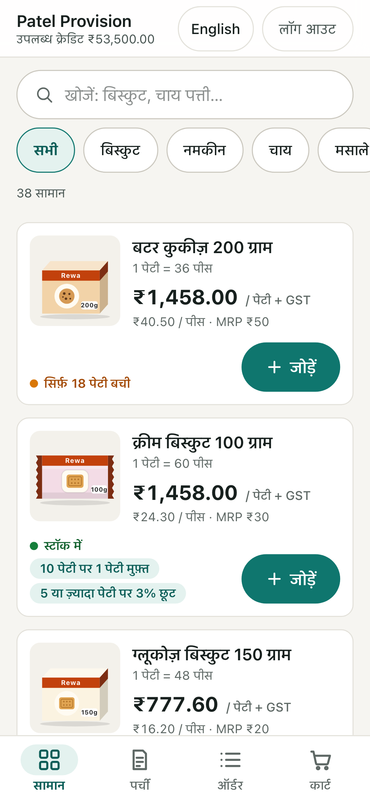
Catalogue: case price + GST label, per-piece price, MRP, stock and offer badges.
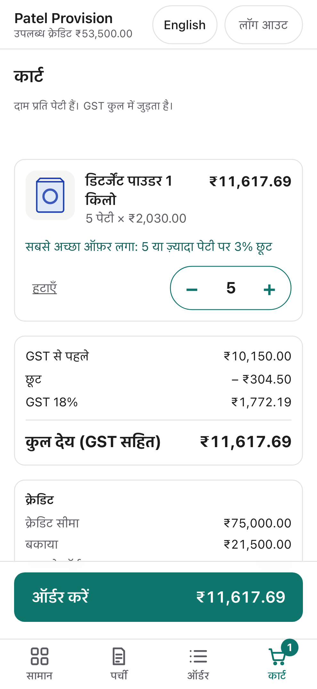
Cart: priced by the server engine; slab discount, GST, total payable, credit.
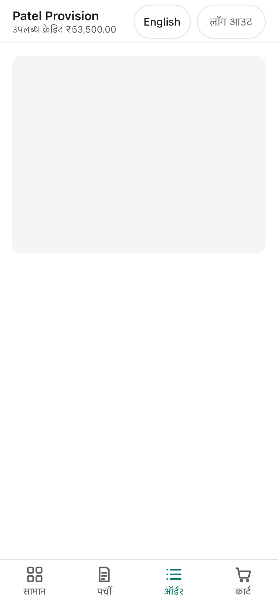
Order detail: status, frozen lines, cancel or order again.
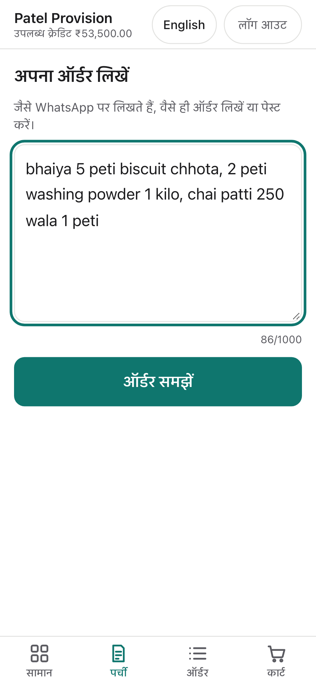
Order slip: paste a WhatsApp-style message.
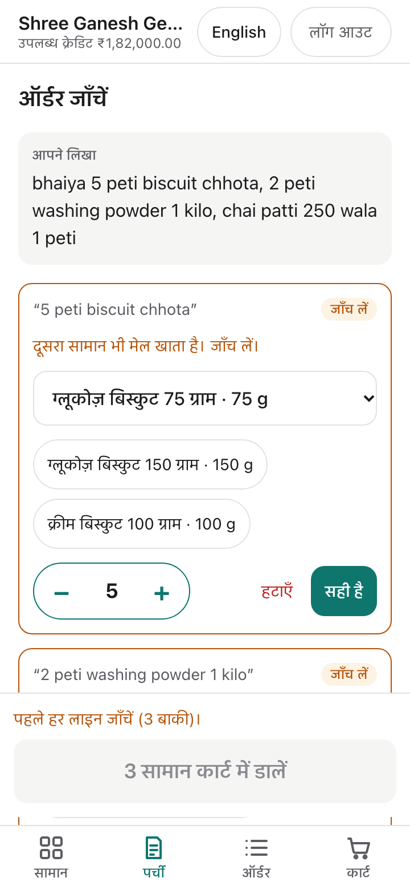
Review: original words, confidence chip, two alternatives, case stepper; every line must be checked.
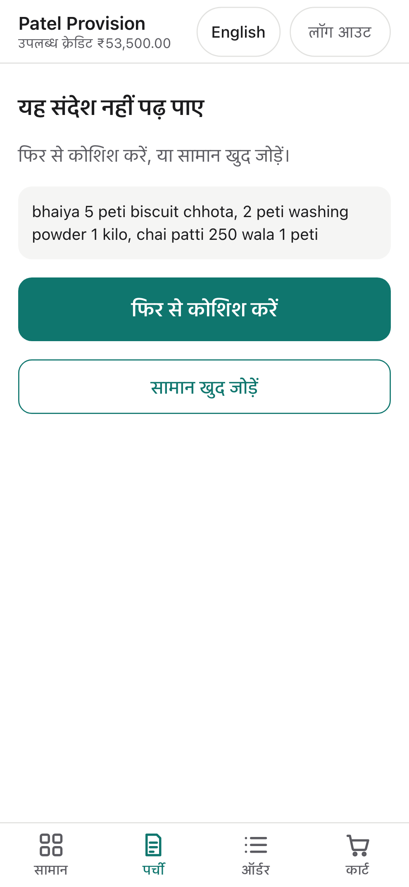
AI unavailable: message kept; try again or add items manually (live, from a 3.8 overload).
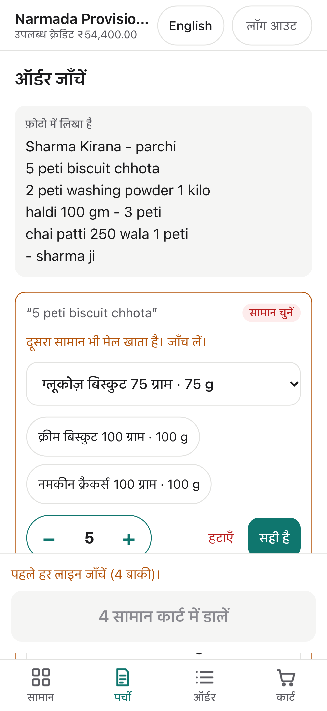
Photo of a handwritten list: transcript shown as "the photo says", then the usual review (live).
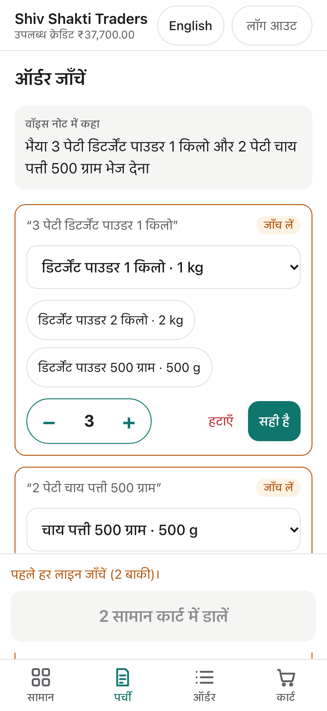
Hindi voice note transcribed in Devanagari, then reviewed (live).
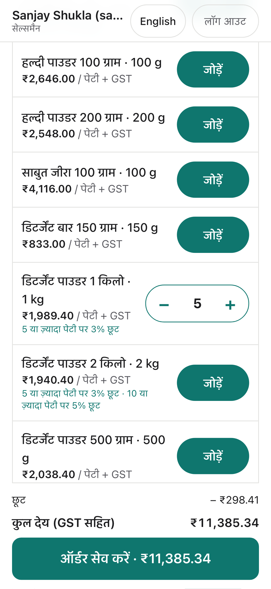
Salesman, no signal: shop's tier price, 3% slab, GST total computed on the phone (live).
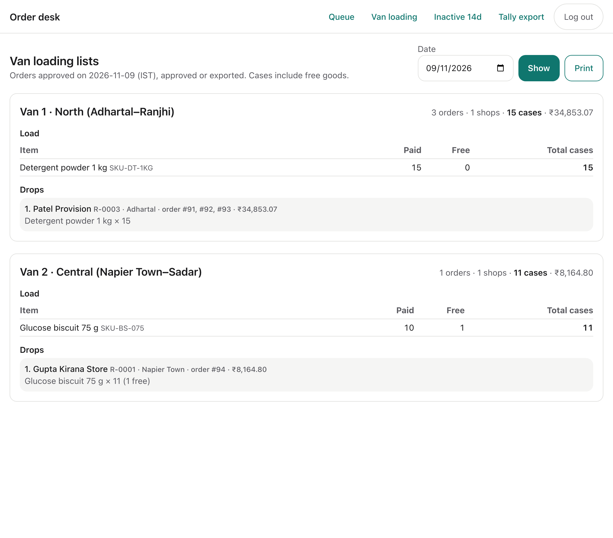
Van loading list: cases per item incl. free goods, drop list per shop.
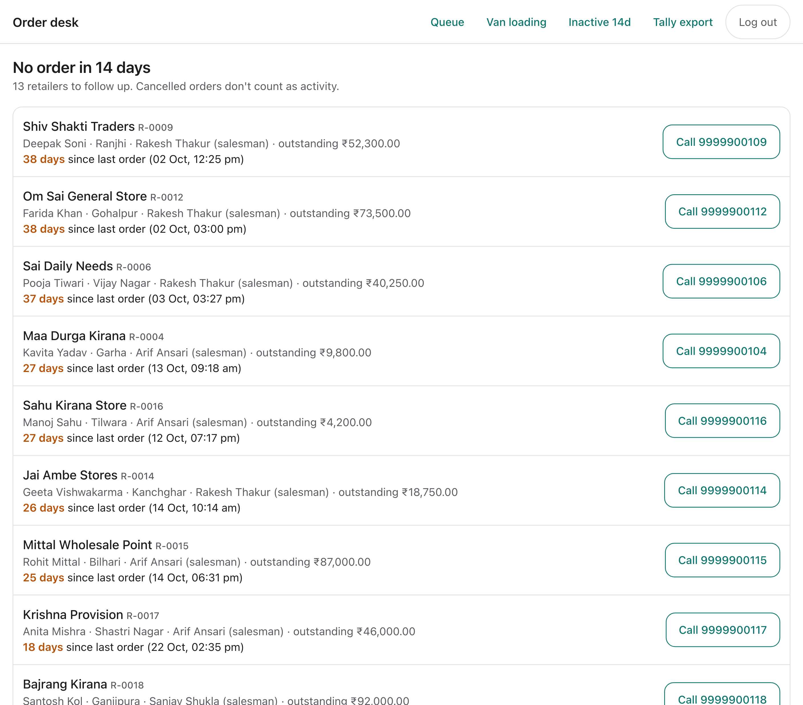
Retailers with no order in 14 days, with call links.
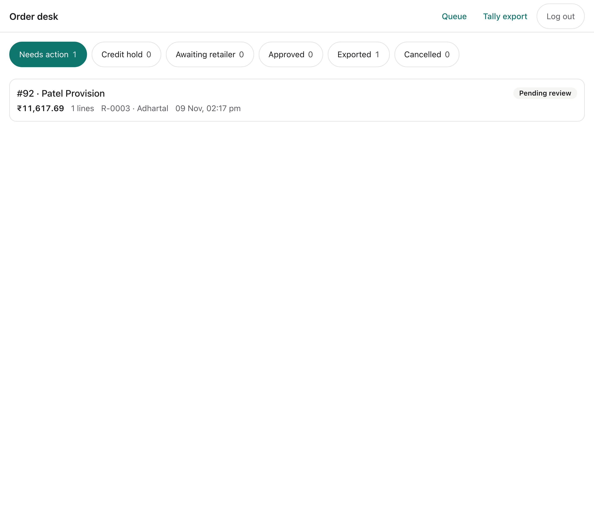
Desk queue with status filters and counts.
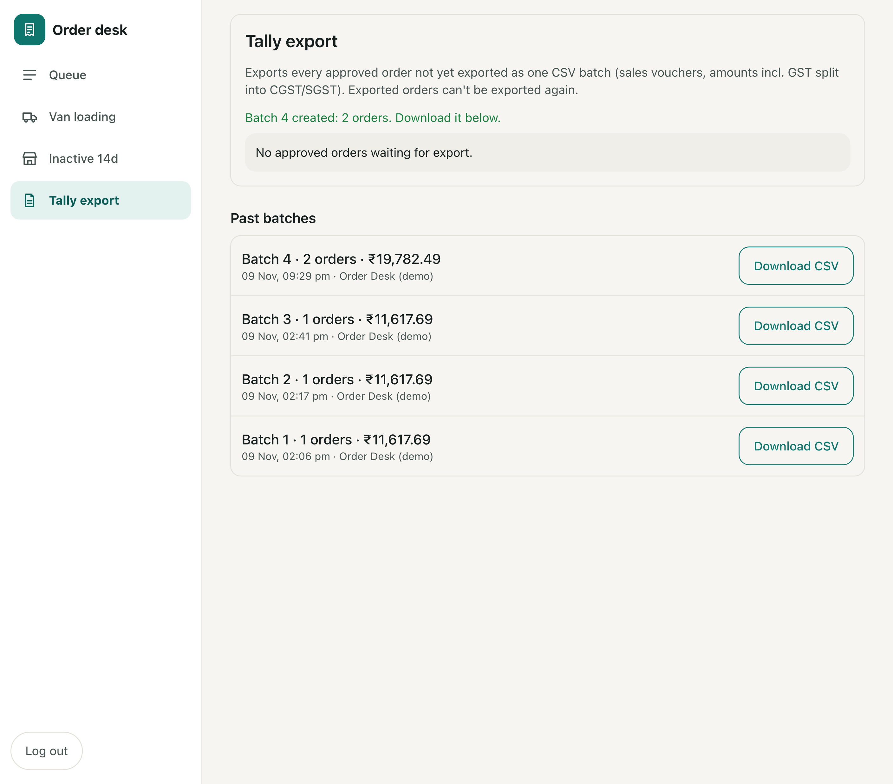
Tally export: batch created, history with re-download.
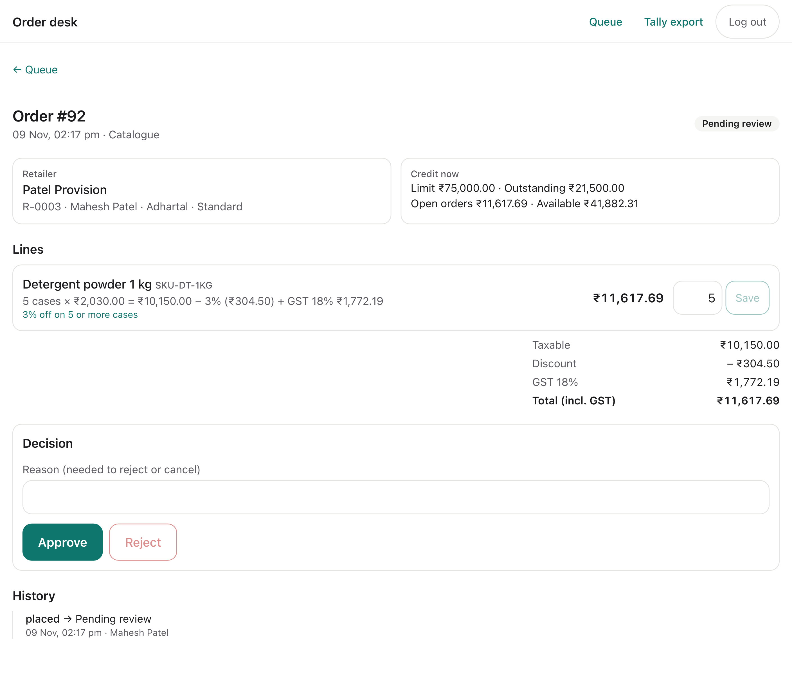
Desk order detail: retailer, live credit, lines with scheme and GST, line edit, decision, history.
15. Security and privacy
Retailer isolation: retailers can never read other retailers' prices, credit, orders or captures. Integration tests (security.int.test.ts) check this for the data functions and actions. The desk sees everything but must name the retailer for retailer-specific operations.
No secrets in the repo:.env* is git-ignored, and .env.example lists names only. Production secrets live in Vercel env vars. The quote signing key was generated fresh for production. The Gemini key is server-only and never in client bundles.
Database connections use TLS with sslmode=verify-full.
AI safety: the prompt carries no personal data or prices. The model output is untrusted and validated. Injected price, stock or discount fields are discarded. The model cannot create orders.
Rate limits on OTP and capture use atomic database counters, so they hold under concurrency and on serverless.
Request hardening: server actions rely on Next's built-in Origin check, and a same-origin helper exists for route handlers. The only route handler (the CSV download) is a read-only GET that is desk-only and no-store. Logout is POST only.
Demo OTP works only when explicitly enabled. It is enabled on the demo deployment for reviewers and would be off in production with a real SMS provider.
16. Testing strategy and actual results
Layer
What
Result (9 Nov 2026)
Unit (Vitest, no database)
Money, pricing, schemes, GST, stock options, credit, status machine, capture post-processing (mocked AI), Tally CSV, cart state, prompt and provider, i18n, salesman offline pricing and outbox state, media file checks, van loading lists, inactivity
E2E (Playwright, 360 px, production build against the test branch)
Hindi login, search, add, nudge, place, history, order again; credit-hold confirmation; language persistence; capture → review → cart once; capture failure path; desk approve → export once → CSV download, with a 404 for retailers; photo order; salesman order taken with the network off, sent on reconnect; van loading list and inactive dashboard
11/11 passed (full run on a fresh test-branch seed, incl. the offline salesman test)
Live smoke (Playwright against the Vercel URL)
Retailer order → desk approval → export → CSV download, retailer 404 on the CSV; AI capture from text, photo and Hindi voice; salesman offline order synced on reconnect; van loading; inactive dashboard
Passed. AI capture: the brief's message gave 3/3 correct lines with gemini-3.5-flash (§11). Earlier runs on 3.8 showed the safe manual path.
Tests use a guarded Neon test branch. The guard refuses to run unless TEST_DATABASE_URL differs from the production URLs, its host isn't protected, and a marker table exists, so the production database is never reset or seeded by tests.
17. Deployment architecture
Pipeline: GitHub → Vercel (every push to main deploys) → functions in sin1 → Neon Postgres in Singapore (pooled URL for the app, direct URL for migrations).
Migrations are applied deliberately with prisma migrate deploy, not during the build.
Env vars (names only): DATABASE_URL, DIRECT_URL, QUOTE_SIGNING_KEY, AUTH_DEMO_OTP, GEMINI_API_KEY, GEMINI_MODEL. The fake AI provider is refused when VERCEL=1.
Full steps are in deployment.md.
18. Performance and scale
Measured on the live app with Playwright Chromium: empty cache, emulated slow 3G (400 ms RTT, 400 kbit/s) and 4× CPU slowdown, two runs each.
Page
TTFB
First contentful paint
Largest contentful paint
DOMContentLoaded
Load event
JS transferred
Total transferred
Login
0.49–0.51 s
2.19 s
2.19 s
1.74–1.76 s
4.02–4.06 s
140 KB (8 files)
150 KB
Catalogue (signed in, 38 products)
0.40 s
2.20–2.22 s
2.20–2.22 s
1.84–1.87 s
4.13–4.17 s
150 KB (10 files)
173 KB
Against the 3-second target: content is visible in about 2.2 s, under 3 s. The full load event (all JS hydrated) takes about 4.1 s, over 3 s.
Caveats: this is emulation, not a real low-end Android phone on a real 3G network. Lighthouse was not run.
Next steps: fewer and smaller client components on the catalogue, and a service worker for repeat visits.
Scale. The brief assumes about 600 orders a day × 300 days (1.8 lakh orders, ₹90 crore). That is about 1 order a minute on average, perhaps 10–20 a minute at peak.
Contention: placement locks only one retailer's row and the SKUs in the order, with short transactions, so two shops don't block each other. Hot SKUs serialise only on a single-row conditional update.
Indexes: queue reads and credit sums use Order(status, placedAt) and Order(retailerId, status). A year of orders (about 1.8 lakh orders and roughly 5 lakh lines) is small for Postgres.
AI capture cost is bounded by per-user and global daily limits.
Not done: no load test was run. Neon pooler limits under bursty serverless traffic, a cold-start p95, and Gemini latency and quota at scale are unverified.
19. Trade-offs, limitations and future work
Item
Status
Notes
Real-model accuracy evaluation
Not run
One live check passed (3/3). A 12-message eval is next. The model moved from 3.8 to 3.5 Flash because of upstream overload (D107).
Desk SKU swap on a line; REVIEW_REQUIRED orders from partial captures (D27)
Deferred
Retailer resolves every capture line instead (D92). The desk can reject and ask the retailer to re-order.
Retailer editing a pending order (D23)
Deferred
Retailer can cancel and use Order again.
Desk-side capture on a retailer's behalf; AI capture inside the salesman app
Deferred
Aliases are saved from retailer captures; salesmen take orders from the catalogue.
Salesman offline data on the phone
By design (D113)
His shops' prices and credit live in localStorage, which offline use requires. Next step: encrypt, and clear on logout.
Photo and voice reliability
Upstream
Media calls are slower and hit Gemini overload more often. They fail safely to manual entry, and the time limit is 40 s.
Desk screens in English only
By decision
D11/D106. Retailer screens are bilingual.
Tally import
Assumed format
Not tested against real Tally. Native XML or TDL is next.
Protected pages return HTTP 200 with a login redirect or not-found content
Known (D73)
Side effect of partial prerendering; no private data is ever sent.
Offline for retailers
Not implemented
Only the salesman app works offline (D113). Retailer and desk pages are never cached.
Next steps:
Run the 12-message evaluation, and move to provisioned quota or a fallback model chain for reliability.
Validate the CSV with the client's accountant in Tally.
Salesman: AI capture inside the app, encrypted on-device data, background sync.
Run the photo and voice evaluation on real handwritten parchis and real shop voice notes.
Add a real SMS OTP provider.
Run a load test at 10× peak.
20. Assumptions (labelled)
Dealer prices in the brief are per consumer pack; case price = price × pack count (to confirm).
Orders are in whole cases. Stock is shared across retailers. Free goods consume stock and carry zero taxable value; the GST treatment of free goods is to be confirmed with the accountant.
GST rates are demo values (biscuits and tea 5%, detergent 18%). Supply is intra-state (CGST + SGST).
The outstanding balance is a mocked ledger figure; Tally owns the truth. Payments are out of scope.